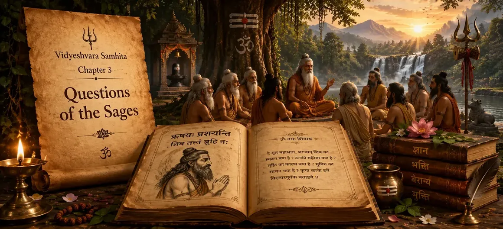

📖 Read the Sacred Shiva Purana Online • Har Har Mahadev 🔱
📖 পবিত্র শিব পুরাণ পাঠ করুন • হর হর মহাদেব 🔱

Chapter 3 → Questions of the Sages
অধ্যায় ৩ → ঋষিদের প্রশ্নাবলি
After hearing about the greatness of the Shiva Purana, the sages gathered at the sacred forest of Naimisharanya became eager to learn more about Lord Shiva and the highest spiritual truth. Filled with devotion and curiosity, they respectfully approached Suta Maharshi and asked profound questions concerning the origin of the universe, the nature of Shiva, the path to liberation and the means by which ordinary people can attain spiritual perfection in the age of Kali Yuga.
This chapter marks an important turning point in the Vidyeshvara Samhita. Rather than merely praising the scripture, the discussion now moves toward deeper philosophical and spiritual subjects. The sincere inquiries of the sages create the foundation for the divine teachings that will unfold throughout the Shiva Purana.
শিব পুরাণের মাহাত্ম্য শ্রবণের পর নৈমিষারণ্যের পবিত্র অরণ্যে সমবেত ঋষিগণ ভগবান শিব এবং পরম আধ্যাত্মিক সত্য সম্পর্কে আরও গভীর জ্ঞান অর্জনের জন্য আগ্রহী হয়ে ওঠেন। ভক্তি ও জিজ্ঞাসায় পরিপূর্ণ হয়ে তাঁরা সূত মহর্ষির নিকট বিনীতভাবে উপস্থিত হন এবং সৃষ্টি জগতের উৎস, শিবের প্রকৃত স্বরূপ, মোক্ষের পথ এবং কলিযুগে সাধারণ মানুষের আধ্যাত্মিক সিদ্ধিলাভের উপায় সম্পর্কে গভীর প্রশ্ন উত্থাপন করেন।
বিদ্যেশ্বর সংহিতার এই অধ্যায় একটি গুরুত্বপূর্ণ মোড় নির্দেশ করে। এখানে কেবল শাস্ত্রের প্রশংসা নয়, বরং গভীর দার্শনিক ও আধ্যাত্মিক আলোচনার সূচনা হয়। ঋষিদের আন্তরিক প্রশ্নসমূহই পরবর্তীতে শিব পুরাণে প্রকাশিত দিব্য জ্ঞানের ভিত্তি স্থাপন করে।
The Questions Asked by the Sages
ঋষিদের জিজ্ঞাসিত প্রশ্নসমূহ
The sages respectfully approached Suta Maharshi and requested him to explain the deepest spiritual truths. Their questions were not asked for personal gain but for the welfare of all beings living in the age of Kali Yuga. They desired to know the path that leads to lasting peace, devotion and liberation.
ঋষিগণ গভীর শ্রদ্ধার সঙ্গে সূত মহর্ষির নিকট উপস্থিত হয়ে সর্বোচ্চ আধ্যাত্মিক সত্য সম্পর্কে ব্যাখ্যা প্রার্থনা করেন। তাঁদের প্রশ্ন ব্যক্তিগত লাভের জন্য ছিল না; বরং কলিযুগে বসবাসকারী সমস্ত জীবের কল্যাণের উদ্দেশ্যে ছিল। তাঁরা এমন পথ জানতে চেয়েছিলেন যা মানুষকে শান্তি, ভক্তি এবং মোক্ষের দিকে পরিচালিত করবে।
🌍
How did creation begin?
সৃষ্টির সূচনা কীভাবে হয়েছিল?
🔱
Who is Lord Shiva in reality?
ভগবান শিবের প্রকৃত স্বরূপ কী?
🕉️
What is the path to liberation?
মোক্ষ লাভের পথ কী?
🙏
How should devotees worship Shiva?
ভক্তরা কীভাবে শিবের উপাসনা করবে?
📖
Which knowledge is the highest?
সর্বোচ্চ জ্ঞান কোনটি?
✨
How can people overcome Kali Yuga?
মানুষ কীভাবে কলিযুগের প্রভাব অতিক্রম করবে?
Why Did the Sages Ask These Questions?
ঋষিগণ কেন এই প্রশ্নগুলি করেছিলেন?
The sages of Naimisharanya were already learned scholars and accomplished spiritual practitioners. However, they understood that true wisdom is not gained merely through knowledge, rituals or austerities. They wished to discover the highest truth that benefits all beings.
Their questions were motivated by compassion. Observing the difficulties faced by humanity in Kali Yuga, they sought a spiritual path that ordinary people could follow regardless of their social status, wealth or learning. They desired to know the easiest and most effective means to attain devotion, inner peace and liberation.
By asking these questions, the sages acted as representatives of all future generations. The answers given by Suta Maharshi would become a source of guidance for countless devotees seeking the grace of Lord Shiva.
নৈমিষারণ্যের ঋষিগণ ছিলেন মহান পণ্ডিত এবং সিদ্ধ সাধক। তবুও তাঁরা উপলব্ধি করেছিলেন যে প্রকৃত জ্ঞান কেবল শাস্ত্রবিদ্যা, যজ্ঞ বা তপস্যার মাধ্যমে অর্জিত হয় না। তাঁরা এমন পরম সত্য জানতে চেয়েছিলেন যা সমস্ত জীবের কল্যাণ সাধন করে।
তাঁদের প্রশ্নের পেছনে ছিল গভীর করুণা। কলিযুগে মানুষের দুঃখ, বিভ্রান্তি ও আধ্যাত্মিক অবক্ষয় দেখে তাঁরা এমন এক পথের সন্ধান করছিলেন যা সাধারণ মানুষও সহজে অনুসরণ করতে পারে। তাঁরা জানতে চেয়েছিলেন ভক্তি, শান্তি এবং মোক্ষ লাভের সবচেয়ে সহজ ও কার্যকর উপায় কী।
এই প্রশ্নগুলির মাধ্যমে ঋষিগণ ভবিষ্যৎ প্রজন্মের প্রতিনিধির ভূমিকা পালন করেছিলেন। সূত মহর্ষির উত্তর পরবর্তীকালে অসংখ্য ভক্তের জন্য পথপ্রদর্শক হয়ে ওঠে এবং মহাদেবের কৃপালাভের পথ উন্মুক্ত করে।
The Importance of Spiritual Inquiry
আধ্যাত্মিক জিজ্ঞাসার গুরুত্ব
The Shiva Purana teaches that sincere spiritual inquiry is the beginning of wisdom. A person who seeks truth with humility opens the door to divine knowledge. Throughout Hindu tradition, great teachings are often revealed through questions asked by devoted seekers and answered by enlightened sages.
The questions raised by the sages of Naimisharanya were not ordinary questions. They concerned the ultimate purpose of life, the nature of God, the origin of creation and the means to attain liberation. Such inquiries purify the mind and direct it toward higher understanding.
By encouraging seekers to ask profound questions, the Shiva Purana reminds us that spiritual growth begins with a sincere desire to learn and understand the eternal truth.
শিব পুরাণ শিক্ষা দেয় যে আন্তরিক আধ্যাত্মিক জিজ্ঞাসাই প্রকৃত জ্ঞানের সূচনা। যে ব্যক্তি বিনয়ের সঙ্গে সত্য অনুসন্ধান করে, সে দিব্য জ্ঞানের দ্বার উন্মুক্ত করে। হিন্দু ধর্মের বহু মহান উপদেশ ভক্তদের প্রশ্ন এবং জ্ঞানী ঋষিদের উত্তরের মাধ্যমে প্রকাশিত হয়েছে।
নৈমিষারণ্যের ঋষিদের প্রশ্ন সাধারণ প্রশ্ন ছিল না। সেগুলি ছিল জীবনের চূড়ান্ত উদ্দেশ্য, ঈশ্বরের প্রকৃতি, সৃষ্টির উৎস এবং মোক্ষলাভের উপায় সম্পর্কে। এই ধরনের জিজ্ঞাসা মনকে পবিত্র করে এবং উচ্চতর উপলব্ধির দিকে পরিচালিত করে।
গভীর প্রশ্ন করতে উৎসাহিত করার মাধ্যমে শিব পুরাণ আমাদের স্মরণ করিয়ে দেয় যে আধ্যাত্মিক উন্নতির সূচনা হয় সত্য জানার আন্তরিক আকাঙ্ক্ষা থেকে।
The Subjects the Sages Desired to Understand
ঋষিগণ যে বিষয়গুলি জানতে চেয়েছিলেন
🔱
The True Nature of Lord Shiva
ভগবান শিবের প্রকৃত স্বরূপ
The sages wished to understand who Lord Shiva truly is and how He exists beyond time, space and creation.
ঋষিগণ জানতে চেয়েছিলেন ভগবান শিবের প্রকৃত স্বরূপ কী এবং কীভাবে তিনি সময়, স্থান ও সৃষ্টির ঊর্ধ্বে অবস্থান করেন।
🌍
The Origin of Creation
সৃষ্টির উৎপত্তি
They desired to know how the universe came into existence and what role Lord Shiva plays in the cosmic cycle.
তাঁরা জানতে চেয়েছিলেন বিশ্বব্রহ্মাণ্ড কীভাবে সৃষ্টি হয়েছে এবং মহাদেব সেই মহাজাগতিক চক্রে কী ভূমিকা পালন করেন।
📖
The Highest Knowledge
সর্বোচ্চ জ্ঞান
The sages sought the wisdom that frees a person from ignorance and reveals the eternal truth.
ঋষিগণ এমন জ্ঞানের সন্ধান করেছিলেন যা অজ্ঞতা দূর করে এবং চিরন্তন সত্যকে উপলব্ধি করায়।
🙏
The Path of Devotion
ভক্তির পথ
They wanted to understand how devotion to Lord Shiva should be practiced and nurtured.
তাঁরা জানতে চেয়েছিলেন কীভাবে ভগবান শিবের প্রতি ভক্তি পালন ও বিকশিত করা উচিত।
✨
Liberation from Worldly Bondage
সংসারবন্ধন থেকে মুক্তি
The sages asked about the means by which human beings can attain moksha and freedom from suffering.
ঋষিগণ জানতে চেয়েছিলেন মানুষ কীভাবে মোক্ষ লাভ করতে পারে এবং দুঃখের বন্ধন থেকে মুক্ত হতে পারে।
🕉️
The Best Path in Kali Yuga
কলিযুগে শ্রেষ্ঠ পথ
They sought guidance for people living in Kali Yuga, who often struggle with distractions and spiritual weakness.
তাঁরা কলিযুগের মানুষের জন্য পথনির্দেশ চেয়েছিলেন, কারণ এই যুগে মানুষ বিভ্রান্তি ও আধ্যাত্মিক দুর্বলতার সম্মুখীন হয়।
A Lesson for Modern Seekers
আধুনিক সাধকদের জন্য শিক্ষা
The sages of Naimisharanya teach us an important lesson: spiritual progress begins with sincere questions. In today's world, people seek knowledge about careers, wealth and worldly success, but often neglect questions about the purpose of life, inner peace and the nature of the soul.
The sages remind us that true wisdom arises when we seek answers to life's deepest mysteries. By asking questions about God, devotion, righteousness and liberation, a seeker gradually moves beyond ignorance and gains spiritual understanding.
This chapter encourages every devotee to approach sacred knowledge with humility, curiosity and an open heart. Just as the sages sought guidance from Suta Maharshi, modern seekers can find direction through the teachings of the Shiva Purana and the grace of Lord Shiva.
নৈমিষারণ্যের ঋষিগণ আমাদের একটি গুরুত্বপূর্ণ শিক্ষা দেন—আধ্যাত্মিক উন্নতির সূচনা হয় আন্তরিক প্রশ্নের মাধ্যমে। আজকের পৃথিবীতে মানুষ কর্মজীবন, অর্থ এবং পার্থিব সাফল্য সম্পর্কে জ্ঞান অর্জনে আগ্রহী হলেও জীবনের প্রকৃত উদ্দেশ্য, অন্তরের শান্তি এবং আত্মার স্বরূপ সম্পর্কে প্রশ্ন করতে প্রায়ই ভুলে যায়।
ঋষিগণ আমাদের স্মরণ করিয়ে দেন যে প্রকৃত জ্ঞান লাভ হয় তখনই যখন মানুষ জীবনের গভীরতম রহস্যগুলির উত্তর খুঁজতে শুরু করে। ঈশ্বর, ভক্তি, ধর্ম এবং মোক্ষ সম্পর্কে প্রশ্ন করার মাধ্যমে একজন সাধক ধীরে ধীরে অজ্ঞতা অতিক্রম করে আধ্যাত্মিক উপলব্ধি লাভ করে।
এই অধ্যায় প্রতিটি ভক্তকে বিনয়, কৌতূহল এবং উন্মুক্ত হৃদয় নিয়ে পবিত্র জ্ঞানের কাছে আসতে উৎসাহিত করে। যেমন ঋষিগণ সূত মহর্ষির নিকট পথনির্দেশ চেয়েছিলেন, তেমনই আধুনিক সাধকরাও শিব পুরাণের শিক্ষা এবং মহাদেবের কৃপায় সঠিক পথ খুঁজে পেতে পারে।
"The sages sought not knowledge for themselves, but wisdom for the welfare of all beings."
"ঋষিগণ নিজেদের জন্য জ্ঞান চাননি, বরং সমস্ত জীবের কল্যাণের জন্য প্রজ্ঞার সন্ধান করেছিলেন।"
Chapter Summary
অধ্যায়ের সারাংশ
In this chapter, the sages gathered at Naimisharanya approach Suta Maharshi with deep reverence and ask a series of profound spiritual questions. Their inquiries concern the nature of Lord Shiva, the origin of creation, the path of devotion, the means of attaining liberation and the highest truth that can benefit all beings.
Rather than seeking knowledge for themselves alone, the sages ask these questions for the welfare of humanity, especially those living in the difficult age of Kali Yuga. Their sincere desire to understand the eternal truth becomes the foundation for the divine teachings that follow throughout the Shiva Purana.
This chapter teaches that genuine spiritual progress begins with humility, curiosity and a sincere longing to know the truth. Through the example of the sages, readers are encouraged to become seekers of wisdom and devote themselves to the path shown by Lord Shiva.
এই অধ্যায়ে নৈমিষারণ্যে সমবেত ঋষিগণ গভীর শ্রদ্ধার সঙ্গে সূত মহর্ষির নিকট উপস্থিত হয়ে বহু গুরুত্বপূর্ণ আধ্যাত্মিক প্রশ্ন উত্থাপন করেন। তাঁদের প্রশ্ন ভগবান শিবের প্রকৃত স্বরূপ, সৃষ্টির উৎস, ভক্তির পথ, মোক্ষলাভের উপায় এবং সকল জীবের কল্যাণকর পরম সত্যকে কেন্দ্র করে।
ঋষিগণ কেবল নিজেদের জ্ঞানলাভের জন্য নয়, বরং সমগ্র মানবজাতির কল্যাণের জন্য এই প্রশ্নগুলি করেন, বিশেষত কলিযুগের মানুষের মঙ্গলের উদ্দেশ্যে। তাঁদের আন্তরিক অনুসন্ধান পরবর্তীতে শিব পুরাণে প্রকাশিত দিব্য শিক্ষার ভিত্তি স্থাপন করে।
এই অধ্যায় শিক্ষা দেয় যে প্রকৃত আধ্যাত্মিক অগ্রগতি শুরু হয় বিনয়, কৌতূহল এবং সত্য জানার আন্তরিক আকাঙ্ক্ষা থেকে। ঋষিদের উদাহরণের মাধ্যমে পাঠকদেরও জ্ঞানসন্ধানী হয়ে মহাদেব প্রদর্শিত পথে চলার অনুপ্রেরণা দেওয়া হয়েছে।
Main Teachings of the Chapter
অধ্যায়ের প্রধান শিক্ষা
🙏
Seek Knowledge with Humility
বিনয়ের সঙ্গে জ্ঞান অনুসন্ধান
True wisdom begins when a seeker approaches spiritual teachers with sincerity and respect.
প্রকৃত জ্ঞানের সূচনা হয় যখন একজন সাধক আন্তরিকতা ও শ্রদ্ধার সঙ্গে আধ্যাত্মিক শিক্ষকের কাছে আসে।
🕉️
Spiritual Questions Are Sacred
আধ্যাত্মিক প্রশ্ন পবিত্র
Questions about God, life and liberation open the path to higher understanding.
ঈশ্বর, জীবন ও মোক্ষ সম্পর্কে প্রশ্ন উচ্চতর উপলব্ধির পথ উন্মুক্ত করে।
🔱
Lord Shiva Is the Ultimate Truth
মহাদেবই পরম সত্য
The sages seek knowledge of the Supreme Reality represented by Lord Shiva.
ঋষিগণ ভগবান শিবের মধ্যে প্রকাশিত পরম সত্যকে জানার আকাঙ্ক্ষা প্রকাশ করেন।
✨
Liberation Is the Highest Goal
মোক্ষই সর্বোচ্চ লক্ষ্য
The purpose of spiritual life is freedom from ignorance and worldly bondage.
আধ্যাত্মিক জীবনের উদ্দেশ্য হলো অজ্ঞতা ও সংসারবন্ধন থেকে মুক্তি লাভ।
📖
Scriptural Wisdom Guides Humanity
শাস্ত্র মানবজাতিকে পথ দেখায়
Sacred scriptures preserve divine knowledge for future generations.
পবিত্র শাস্ত্র ভবিষ্যৎ প্রজন্মের জন্য দিব্য জ্ঞান সংরক্ষণ করে।
🌍
Seek the Welfare of All
সকলের কল্যাণ কামনা
The sages asked questions for the benefit of all beings, not for personal gain.
ঋষিগণ ব্যক্তিগত লাভের জন্য নয়, বরং সকল জীবের কল্যাণের জন্য প্রশ্ন করেছিলেন।
Did You Know?
আপনি কি জানেন?
The questions asked by the sages in this chapter form the foundation of the entire Shiva Purana. Their sincere desire to understand the highest truth opens the way for all the teachings, stories and spiritual wisdom that follow throughout the scripture.
এই অধ্যায়ে ঋষিগণের উত্থাপিত প্রশ্নগুলিই সমগ্র শিব পুরাণের ভিত্তি স্থাপন করে। পরম সত্য জানার প্রতি তাঁদের আন্তরিক আগ্রহই পরবর্তী সমস্ত শিক্ষা, কাহিনী এবং আধ্যাত্মিক জ্ঞানের দ্বার উন্মুক্ত করে।
What Happens Next?
পরবর্তী অধ্যায়ে কী ঘটবে?
After hearing the questions of the sages, Suta Maharshi begins to answer them by describing the supreme greatness of Lord Shiva. In the next chapter, the sages learn why Shiva is regarded as the Supreme Reality and why He is worshipped by gods, sages and devotees throughout the universe.
ঋষিদের প্রশ্ন শ্রবণের পর সূত মহর্ষি তাঁদের উত্তর দিতে শুরু করেন এবং ভগবান শিবের পরম মাহাত্ম্য বর্ণনা করেন। পরবর্তী অধ্যায়ে ঋষিগণ জানতে পারেন কেন শিবকে পরম সত্য হিসেবে মানা হয় এবং কেন দেবতা, ঋষি ও ভক্ত সকলেই তাঁকে পূজা করেন।
① Why did the sages ask so many questions?
① ঋষিগণ এত প্রশ্ন কেন করেছিলেন?
The sages were seeking the highest spiritual truth for the benefit of all beings, especially those living in Kali Yuga.
ঋষিগণ সকল জীবের কল্যাণের জন্য, বিশেষত কলিযুগের মানুষের মঙ্গলের উদ্দেশ্যে সর্বোচ্চ আধ্যাত্মিক সত্য জানতে চেয়েছিলেন।
② What was the main purpose of their inquiry?
② তাঁদের প্রশ্নের মূল উদ্দেশ্য কী ছিল?
They wished to understand Lord Shiva, the nature of creation, the path of devotion and the means of attaining liberation.
তাঁরা ভগবান শিব, সৃষ্টির প্রকৃতি, ভক্তির পথ এবং মোক্ষ লাভের উপায় সম্পর্কে জানতে চেয়েছিলেন।
③ Why is spiritual inquiry important?
③ আধ্যাত্মিক জিজ্ঞাসা কেন গুরুত্বপূর্ণ?
Spiritual inquiry helps remove ignorance and leads a seeker toward wisdom, devotion and realization of the truth.
আধ্যাত্মিক জিজ্ঞাসা অজ্ঞতা দূর করে এবং একজন সাধককে জ্ঞান, ভক্তি ও সত্য উপলব্ধির পথে পরিচালিত করে।
④ Who answered the questions of the sages?
④ ঋষিদের প্রশ্নের উত্তর কে দিয়েছিলেন?
Suta Maharshi answered the questions and began revealing the divine teachings contained within the Shiva Purana.
সূত মহর্ষি ঋষিদের প্রশ্নের উত্তর দেন এবং শিব পুরাণের দিব্য শিক্ষার বর্ণনা শুরু করেন।
⑤ What is the main lesson of Chapter 3?
⑤ তৃতীয় অধ্যায়ের প্রধান শিক্ষা কী?
The chapter teaches that sincere questions asked with humility are the foundation of spiritual wisdom and growth.
এই অধ্যায় শিক্ষা দেয় যে বিনয়ের সঙ্গে করা আন্তরিক প্রশ্নই আধ্যাত্মিক জ্ঞান ও উন্নতির ভিত্তি।
Continue Reading
পাঠ চালিয়ে যান
Explore the previous and next chapters of Vidyeshvara Samhita.
বিদ্যেশ্বর সংহিতার পূর্ববর্তী ও পরবর্তী অধ্যায়গুলি অন্বেষণ করুন।